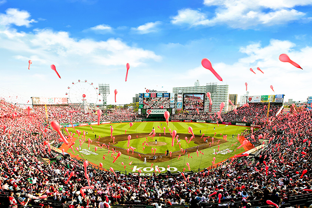

<html></html>
  <meta name=”viewport” content=”width=device-width,initial-scale=1.0″>
  <head>
    <meta http-equiv="content-type" content="text/html; charset=utf-8" />
    <link href="style.css" rel="stylesheet" type="text/css" />
    <meta name=”viewport” content="width=device-width,initial-scale=1.0,minimum-scale=1.0">
    <meta http-equiv="content-language" content="ja" />
    <title>教えてにんじんくん！ 宮城県の魅力</title>
  </head>

  <body>
    <div class="title", id="p0">
      <h4>教えて、にんじんくん！</h4>
      <h1>宮城県の魅力</h1>
    </div>

    <div class="mokuji">
      <h3>目次</h3>
      <ol>
        <li><a href="#p1">宮城県の魅力とは？</a></li>
        <li><a href="#p2">宮城県の魅力①</a></li>
        <li><a href="#p3">宮城県の魅力②</a></li>
        <li><a href="#p4">宮城県の魅力③</a></li>
        <li><a href="#p5">まとめ</a></li>
      </ol>
    </div>

    <div class="box" id="p1">
      <h2>１.宮城県の魅力とは？</h2>
      
      <p>宮城県の魅力を教えてほしい？全てだよ～！</p>
      <p>え、具体的に教えてほしい？仕方ない…。なら私から、主に３つの魅力を教えよう！</p>
    </div>

    <div class="box" id="p2">
      <h2>２.宮城県の魅力①　グルメがうまい！！！</h2>
      <p>私のおすすめの宮城県名物のグルメはこちらだよ～</p>
      <div class="box2">
        <h3>牛タン</h3>
        
        <p>ジューシーでめっちゃおいしいです！つくば駅にあるtonarieで最近牛タンの店ができたので、ぜひ仙台の牛タンを召し上がってね～！</p>
      </div>
      <div class="box2">
        <h3>ずんだ餅/ずんだシェイク</h3>
        <div class="zunda">
          
          
        </div>
        <p>枝豆の甘みと餅のふわふわな食感がサイコーです！ずんだシェイクに敵うシェイクなし！（個人的はソーダ味シェイクが好きだけれどね…笑）</p>
      </div>
      <div class="box2">
        <h3>
          <ruby>
            <rb>油麩丼</rb>
              <rp>（</rp>
                <rt>あぶらふどん</rt>
              <rp>）</rp>
          </ruby>
        </h3>
        
        <p>登米市のB級グルメです。油麩のふわふわな食感がたまらんです！！！</p>
      </div>
    </div>

    <div class="box" id="p3">
      <h2>３.宮城県の魅力②  ロマンチックな観光地がたっぷり！！！</h2>
      <p>私のおすすめの観光地をどんどん紹介するぜ～</p>
      <div class="box2">
        <h3>松島</h3>
        
        <p>宮城県といえば、松島！島と海という自然豊かさに感動を受けるでしょう！！！</p>
      </div>
      <div class="box2">
        <h3>仙台城跡（青葉城址）・伊達政宗像</h3>
        
        <p>仙台といえば、伊達政宗！伊達政宗のかっこいい像、ご覧あれ～。あと、夜景がめっちゃ綺麗です！</p>
      </div>
      <div class="box2">
        <h3>楽天モバイルパーク</h3>
        
        <p>唯一の観覧車付きの球場です！野球観戦だけではなく、観覧車で高いところから宮城県の景色を味わってはいかがでしょうか？</p>
      </div>
      <div class="box2">
        <h3>秋保温泉</h3>
        
        <p>温泉といえば、秋保温泉！森や滝などの自然に囲まれて、疲労を吹っ飛ばしそう！あとデートスポットもあるので、彼氏・彼女と一緒に行ってはいかがでしょうか？</p>
      </div>
      <div class="box2">
        <h3>御釜</h3>
        
        <p>宮城県のロマンチックを味わえたいなら、御釜！（行った記憶あまりなくて、詳しくは説明できないです…涙）
      </div>
    </div>

    <div class="box" id="p4">
      <h2>４.宮城県の魅力③　名物のお土産、最強クラス級のおいしさ！！！</h2>
      <p>私のどうしても超おすすめしたいお土産を紹介するぞ～</p>
      <div class="box2">
        <h3>萩の月</h3>
        
        <p>宮城県定番のお土産といえば、「萩の月」です！ふわふわな食感とカスタードクリームの甘み、たまらんです！！！</p>
      </div>
      <div class="box2">
        <h3>じゃがりこ　牛タン味</h3>
        
        <p>じゃがりこといえば、サラダ味？ちげぇ。牛タン味に決まってんだろ！（笑）牛タンの旨味が感じられて、まじで食べ止められない！</p>
      </div>

      <div class="box2">
        <h3>仙臺サンド ずんだ/仙台いちご</h3>
        
        <p>仙台名物の隠し（？）お土産です！例のお笑い芸人「サンドウィッチマン」が認める、おすすめできるお土産です！ずんだ味と仙台いちご味の両方とも楽しめることができ、「めっちゃ、うめぇ！！！」と叫びたいほど、うまいです！！！</p>
      </div>
    </div>


    <div class="box" id="p5">
      <h2>５.まとめ</h2>
      <p>宮城県の魅力として、<b>宮城県名物のグルメ</b>、<b>観光地</b>、<b>お土産</b>を紹介しました～</p>
      <p>え、もっと知りたい？素晴らしい！なら、次のウェブサイトで一緒に宮城県の魅力を探索してみましょう！</p>
      <ul>
        <li><a href="https://www.miyagi-kankou.or.jp/">宮城県まるごと☆探訪</a></li>
        <li><a href="https://www.sendaimiyagicp.jp/">仙台・宮城観光キャンペーン推進協議会公式サイト|笑顔咲くたび伊達な旅</a></li>
      </ul>
      <p>最後におらから一言で締めたいと思います～！</p>
      <h1>そうだ、宮城県に行こうぜ！</h1>
    </div>

    <div class="name">
      <h3>（編集者）</h3>
      
      <h1>にんじんくん</h1>
      <h2>（本名）いいづか りょうた</h2>
      <p>宇宙一（？）宮城県を愛する男。宮城県の魅力をどんどん発信していきたいと思います！少しでも宮城県のことが好きになってくださったら、超嬉しいです！ぜひ高評価お願いします！！！</p>
    </div>

    <div>
      <p class="center"><a href="#p0">トップへ戻る</a></p>
    </div>
  </body>
</html>